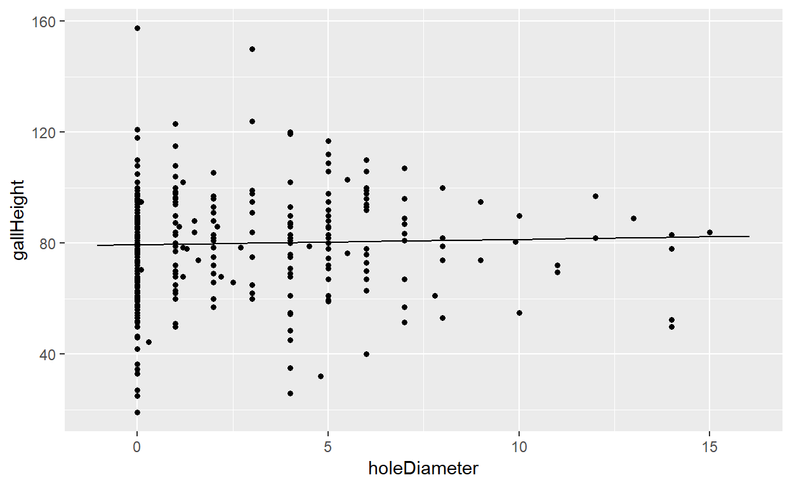

A sample data tidying and analysis of the Goldenrod Gall Fly Larvae data from Bio 314: Ecology and Evolution at Georgetown College.
The Goldenrod Gall Fly (GF) is a species of fly that lays its eggs in the stem of the goldenrod plant. The larvae hatch and secrete a hormone that causes the stem to grow a woody bulge that the larvae use as shelter and food throughout the winter. The life of a gall fly larva is far from safe, however, as they have a number of predators that attack the galls. The predators we focus on in this experiment are the chickadee (C), the downy woodpecker (WP), and a species of parasitoid wasp (EG). The Bio 314 lab class traveled to a field next to Lane’s Run stream in Scott County and collected a sample of 428 galls, taking measurements on how high the gall was from the ground (gallHeight), the gall diameter (gallDiameter), the diameter of the hole in the gall if there was one (holeDiameter), and whether the gall was away from treeline by the water (>3 feet) or near it (<= 3 feet). Based on the diameter of the hole, the lab groups made conclusions on what caused the hole (expectedCause). This data was gathered into a Microsoft Excel Document and made available to me for this data analysis project.
The tidyverse package came in handy for the dataset, because the pipe (%>%) operator and the rename() and select() functions from dplyr were used to create legal varaible names and select the variables desired in this data analysis. The ID column also did not have uniform identifier names, so a simple assignment to the set of numbers from 1 to 428 (the number of galls in the sample) fixed the naming issue.
For this analysis, a linear model was used to see if there is a correlation between the height of the gall and the hole size, and another was used to determine whether there was a correlation between gall diameter and hole size. The results of these led to a third question–whether gall diameter could predict the expected cause of gall hole.
The variables used for this analysis were:
It does not appear as though there is a strong correlation between gall height and hole diameter. There appears to be a slight correlation, as hole diameter goes up, it appears that the gall height is lower than the smaller hole diameters. Now, for the model to find the regression equation:
Call:
lm(formula = gallHeight ~ holeDiameter, data = studentGallData)
Residuals:
Min 1Q Median 3Q Max
-60.410 -12.354 1.119 11.619 78.090
Coefficients:
Estimate Std. Error t value Pr(>|t|)
(Intercept) 79.4104 1.2329 64.410 <2e-16 ***
holeDiameter 0.1941 0.3263 0.595 0.552
---
Signif. codes: 0 '***' 0.001 '**' 0.01 '*' 0.05 '.' 0.1 ' ' 1
Residual standard error: 18.98 on 360 degrees of freedom
(66 observations deleted due to missingness)
Multiple R-squared: 0.0009817, Adjusted R-squared: -0.001793
F-statistic: 0.3538 on 1 and 360 DF, p-value: 0.5524The linear model gave an R^2 value of 0.0009817. Remember that R^2 always falls between 0 and 1, with the magnitude of r showing the strength of correlation. Here, with R^2 only being 0.001, it backs up the inference that there is not a very strong correlation between gall height and hole diameter. We have a p-value of 0.5524, meaning that if the null is correct, then there is a 55% chance of getting an f-statistic of at least 0.3538. This means that we can not reject the null hypothesis, so we conclude that gall height does not play a role in the diameter of the hole found in the gall.
We can graph this using the plotModel() function from the mosaic package included in base R.

As you can see, the graph supports this claim that gall height indeed does not tend to affect the hole diameter and thus the expected cause.
One theory that can be drawn from this is that predators do not tend to show a preference in the height of galls that they attack.
It appears as though there may be a correlation between gall diameter and hole diameter. Now, for the model to find the regression equation:
Call:
lm(formula = gallDiameter ~ holeDiameter, data = studentGallData)
Residuals:
Min 1Q Median 3Q Max
-13.7408 -2.0521 0.2592 2.7025 11.2592
Coefficients:
Estimate Std. Error t value Pr(>|t|)
(Intercept) 17.74076 0.22576 78.583 < 2e-16 ***
holeDiameter 0.31134 0.05892 5.284 2.06e-07 ***
---
Signif. codes: 0 '***' 0.001 '**' 0.01 '*' 0.05 '.' 0.1 ' ' 1
Residual standard error: 3.63 on 405 degrees of freedom
(21 observations deleted due to missingness)
Multiple R-squared: 0.0645, Adjusted R-squared: 0.06219
F-statistic: 27.93 on 1 and 405 DF, p-value: 2.065e-07This time, an R^2 value of 0.0645 was obtained. According to this model, there was a bit stronger of a correlation between the diameter of the gall and the diameter of the hole. However, the correlation is still not a very strong one. This correlation does make sense, as you would expect birds (which leave the larger holes) to go after larger sized galls because they are easier to spot. And the smaller galls tend to be attacked by parasitoid wasps, or have successful gall fly larvae emerge from it, which is shown by the scatterplot above. We also have a p-value of 2.065e-07, which is well below 0.05. This means that if the null hypothesis is correct, then there is a 2.065e-07 chance of getting an f-statistic at least as big as 27.93. Basically, there is enough statistical significance to reject the \(H_0\) that there is no correlation between gall diameter and the diameter of the hole. We could infer then that gall diameter does play a factor in the diameter of the hole, which then allows a decision about the type of predator that attacked the gall.
The correlation between gall diameter and hole diameter led to the question of whether there was a relationship between the gall’s diameter and the expected cause of gall hole.
First, the data was analyzed using the favstats() function from the mosaic package to find the spread of diameters for each group:
expectedCause min Q1 median Q3 max mean sd n missing
1 C 12 18 20 21.5 25.0 19.53333 2.848576 39 0
2 EG 10 15 18 20.0 24.0 17.39855 3.802650 69 0
3 GF 11 17 19 21.0 25.0 18.66667 3.812261 21 0
4 WP 11 18 20 22.0 25.5 20.00455 2.933120 110 0As you can see, the mean diameter of bird attacked (WP, C) galls, 19.75 ((20+19.5)/2), is higher than the mean diameter of non-bird attacked (GF, EG) galls, 18.5 ((19+18)/2). This can be analyzed using a density plot to support this difference of means claim.
Next, the data was plotted using a density plot to see the gall diameters by expected cause:
The graph shows what was concluded from the numerical analysis, that the mean diameters of galls attacked by birds is higher than the mean diameters of galls attacked by wasps or that had successful gall fly larvae.
An ANOVA (analysis of variance) was used to determine whether there was a statistically significant difference in the means of the groups. The overall group mean \(\mu\) can be found using favstats():
min Q1 median Q3 max mean sd n missing
4 16 19 21 29 18.46143 3.748032 407 21Here we have \(\mu\) = 18.46.
\(H_0\): There is no correlation between gall diameter and expected hole cause.
\(H_a\): There is evidence that suggests there is a correlation between gall diameter and expected hole cause.
Here, the lm() function and the anova() function was used to calculate the significance.
Call:
lm(formula = gallDiameter ~ expectedCause, data = studentGallData)
Residuals:
Min 1Q Median 3Q Max
-9.0045 -2.0045 -0.0045 2.3333 6.6014
Coefficients:
Estimate Std. Error t value Pr(>|t|)
(Intercept) 19.5333 0.5244 37.251 <2e-16 ***
expectedCauseEG -2.1348 0.6560 -3.254 0.0013 **
expectedCauseGF -0.8667 0.8863 -0.978 0.3292
expectedCauseWP 0.4712 0.6103 0.772 0.4408
---
Signif. codes: 0 '***' 0.001 '**' 0.01 '*' 0.05 '.' 0.1 ' ' 1
Residual standard error: 3.275 on 235 degrees of freedom
(189 observations deleted due to missingness)
Multiple R-squared: 0.1066, Adjusted R-squared: 0.09516
F-statistic: 9.344 on 3 and 235 DF, p-value: 7.362e-06
Analysis of Variance Table
Response: gallDiameter
Df Sum Sq Mean Sq F value Pr(>F)
expectedCause 3 300.59 100.197 9.3436 7.362e-06 ***
Residuals 235 2520.05 10.724
---
Signif. codes: 0 '***' 0.001 '**' 0.01 '*' 0.05 '.' 0.1 ' ' 1After running the analysis on the data, we found an F-statistic of 9.344, and a p-value very close to 0. The f-statistic is high, meaning there is significant evidence against \(H_0\), and the p-value is extremely low. Since 7.362e-06 < 0.05, we can reject \(H_0\) and say that there is evidence that Gall Diameter can determine the expected cause of hole found in the gall. The summary of the linear model showed high significance especially for Chickadee and Wasp mean diameter preference, as they had the greatest variance from the mean diameter of 18.46.
The analysis done on the gall fly larva data determined that there is no significant evidence that gall height plays any factor in the predation preferences of birds and wasps. The linear regression model for gall diameter showed a slight correlation between gall diameter and hole diameter, which led to the question of if gall diameter could be used to predict the expected cause of attack. An ANOVA test and linear model summary were used to determine the significance of the difference in mean between the groups and the overall gall mean. This lead to the conclusion that gall diameter does indeed play a factor in the expected cause of attack. Likely, the larger galls are targeted more by birds, as we saw in the grahical analysis, because they are easier to spot by birds.